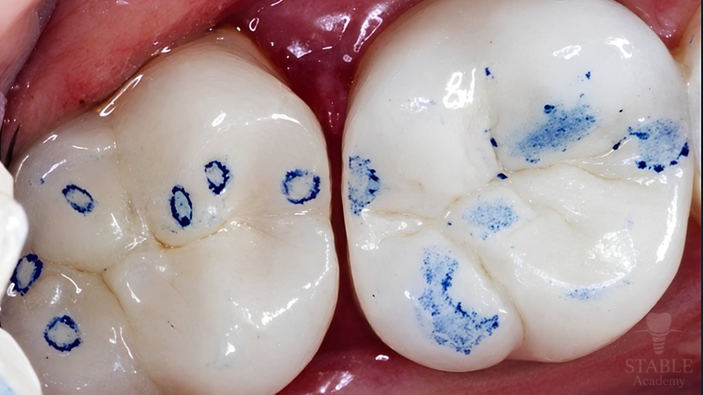
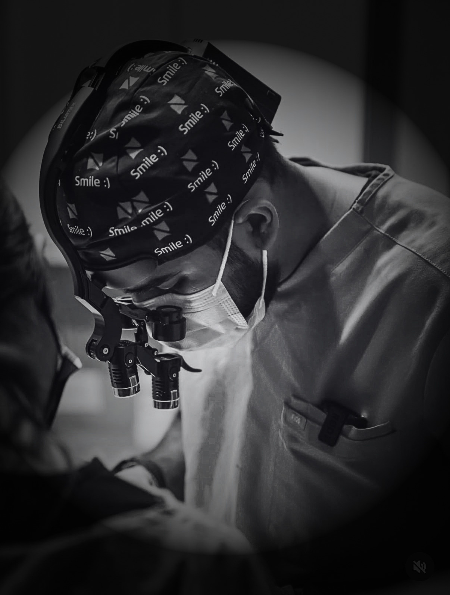

Two lectures
Occlusion &
Rehabilitation
- Occlusion Made Easy
- Vertical Dimension with FMR
Learn the foundations of full-mouth rehabilitation through cases. You can stop after Occlusion or complete both lectures.
Choose rehabilitationLive online teaching for dentists worldwide
A clinical programme in restorative and implant dentistry.
Advanced concepts, explained simply through real cases. Understand the reasoning and take practical checks into your Monday morning.
Find your learning pathwayYour learning, in a clear sequence
Start with the concepts your chosen pathway needs. Continue as far as your interests take you.
Two lectures
Learn the foundations of full-mouth rehabilitation through cases. You can stop after Occlusion or complete both lectures.
Choose rehabilitationFour lectures
Build the foundations, then learn full-arch diagnosis, planning, surgical understanding and restoration. Relevant whether you plan, refer, restore or operate.
Choose All-on-XTwo lectures, standalone
Compare conventional and immediate implants, with particular attention to immediate treatment and the reasoning behind each step. No Occlusion or Vertical Dimension prerequisite.
Choose implantsWant everything? The complete programme includes all four modules and six lectures. Individual modules are also available, subject to their prerequisites.
Why the foundations matter
Occlusion and Vertical Dimension form the foundations of our full-mouth rehabilitation teaching. Cases connect these concepts with diagnosis, restorative decisions and treatment sequencing.
You can complete these two lectures without studying All-on-X. All-on-X adds the diagnostic, surgical and restorative considerations of full-arch implant care.
The separate Implant module can be taken independently and is not required for our All-on-X module.
Four modules, six lectures
01 / One lecture
Assess contacts and guidance. Understand jaw movement and practical checks for natural teeth, implants and removable prostheses. Work through the questions behind everyday occlusal decisions.
Entry module. No prerequisite.
02 / One lecture
Assess restorative space and vertical dimension through rehabilitation cases. Connect records, diagnosis, planning and provisional evaluation with the intended restoration.
Requires our Occlusion module. FMR teaching is integrated across these first two lectures.
03 / Two lectures
Lecture 1: Diagnosis and treatment planning. Assess the patient and plan the intended full-arch prosthesis.
Lecture 2: Execution and restoration. Understand the surgical stages, provisional treatment, definitive restoration and maintenance.
Requires our Occlusion and Vertical Dimension modules. Designed for dentists who plan, refer, restore or perform surgery. Surgical understanding matters even when you refer the procedure.
04 / Two lectures, independent entry
Lecture 1: Foundations and surgery. Case selection, conventional and immediate placement, and the reasoning behind surgical decisions, with an emphasis on immediates.
Lecture 2: Restoration. Compare conventional and immediate workflows, provisionalisation, loading decisions, definitive restoration and maintenance.
Can be taken alone. Immediate placement and immediate loading are different decisions.
A focused teaching cycle
We plan two intakes for each topic before progressing. Choose one intake, complete that topic, then join the next stage you have enrolled in.
The two lectures within All-on-X and Implants are planned as Saturday and Sunday blocks. They are different parts of the same module, so participants attend both.
Occlusion and Vertical Dimension each remain one lecture. Two intakes give you a choice of cohort, not extra required lectures.
Dates, times and your chosen intake will be agreed before payment.
From the first Occlusion class
“A lot of information in a very concise way.”
“It opened my eyes to things I missed, even after going through my prostho residency”
Included with your learning
Real cases, clear explanations and time to ask your questions.
Revisit the explanations after your live sessions.
Written checks to support your Monday morning workflow.
Selected papers with simple summaries that connect the evidence to your clinical decisions.
Every paid enrolment includes six months of complimentary access to Dr Parmar’s paid articles on Decoded Weekly. The first paid Occlusion cohort is included.
Subscribe to Decoded Weekly using the free option, then message Dr Parmar with your enrolment and Substack email addresses. We verify your enrolment and activate your six-month access personally. No separate Substack purchase is required.
Your access is included whether or not you leave a course review.
Independent clinical education. No CE credit is advertised. Full teaching slide decks are not distributed.
Inside the Occlusion lecture
A crown feels high. You see these contact marks. What else would you assess before adjusting?
We use clinical examples to connect the observation, the question and the next check.
Explore what you will learn
Choose your learning
Everyone receives the same teaching and materials. Select your country of primary practice to see your tuition.
Your country determines the applicable regional fee.
All prices are one-time totals for the learning listed. Previous attendees can book only their remaining modules. If you have already completed part of a bundle, contact us before paying.
India tuition is shown and billed in rupees, starting at ₹2,999 per lecture. Other eligible regional countries pay US$39 per lecture. The US and comparable high-income countries pay US$199 per lecture. Everyone receives the same teaching and materials.
Your fee is based on where you primarily practise. We confirm this during enrolment and send the appropriate payment link. We use World Bank income classifications as the basis for regional eligibility. Bundle totals are listed separately or available on enquiry.
Your next step
Choose your learning and message us to confirm your session. We will help you enrol and send the right payment link for your tuition.
Select your country above to see your fee.
Select or change your countryYour place is confirmed after payment.
Send your enquiry and we will help you with the next step.
One-time payment. Enter your name and email at checkout. For a single lecture, confirm the lecture and intake with Dr Parmar before using this checkout.
Beyond the lectures
Clinical experiences carry higher, separately quoted fees. They are not included in online tuition or bundles.

Contact Dr Parmar directly to enquire about observing or shadowing surgeries and restorative procedures.
Enquire about live-patient surgical and restorative training, hands-on learning and one-to-one mentoring.
With enough participants and a suitable local host, we can discuss in-person teaching near you.
Clinical participation depends on the agreed format, case availability, patient consent and applicable permissions. New Jersey enquiries are for observation and shadowing.
Questions before joining
Yes. Take Occlusion alone, or continue to Vertical Dimension with FMR. Together they provide the foundations of our rehabilitation teaching. All-on-X is optional.
Complete our Occlusion and Vertical Dimension modules. The separate Implant module is not required. All-on-X includes surgical understanding for dentists who refer as well as those who operate.
Yes. The two-lecture Implant module has an independent entry point and compares conventional and immediate workflows from foundations through restoration.
Subscribe to Decoded Weekly using the free option, then send us your enrolment and Substack email addresses. After verifying your paid enrolment, we activate six months of complimentary paid-article access. You do not need to buy a separate Substack subscription. The first paid Occlusion cohort receives this benefit too. Activation is arranged personally after enrolment.
No. Choose one intake for each topic. For a two-lecture module, attend both parts within your selected intake. We then progress to the next topic in the teaching cycle.
Contact us for your returning-attendee fee before paying for Vertical Dimension. Once you have completed both foundations, you can book the two-lecture All-on-X module. Contact us before buying a bundle that includes something you have already completed.
Occlusion takes place on Saturday, October 3, 2026. Vertical Dimension with FMR follows on Saturday, October 17, 2026. Session times and the dates for later modules will be confirmed before payment.
{kind=link}